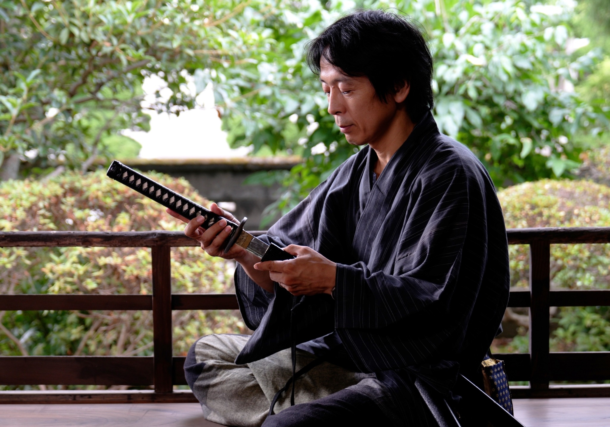

自在流 殺陣・息道
殺陣の人。お茶の人。数秘の人。
福和倭迅会（ふくわ わじんかい）代表／Hiroshi Fukuta
殺陣師／息道 提唱者／口伝数秘術 鑑定士／テーブル茶道インストラクター

たぶん、どれも間違っていません。でも、自分の中では、どれも入口です。自分が本当に作りたいのは、場です。
詰め込みすぎない方が、人って勝手に動き始める気がしています。気づいたら、それぞれが自分の役割を見つけている。「ここに居ていいんだ」そんな感覚が生まれる場所を作りたいと思っています。
殺陣、テーブル茶道、口伝数秘術、息道。福和倭迅会には、いくつかの入口があります。刀から入る人。お茶から入る人。数字から入る人。呼吸から入る人。入口は、違っていてかまいません。
誰と居るかで、呼吸って結構変わる気がしています。どんな空気の中に身を置くか。それって、思っている以上に大事なんだと思います。
ここに来る人に、特別な条件はありません。職業も、年齢も、性格も、趣味も、障害の有無も関係ない。それぞれが、自分の得意や興味を持って来られる場所。それぞれが無理をせず、補い合える場所。教える場所というより、思い出す場所。正解はすでに、あなたの身体の中にあります。
ここは、誰かが強く引っ張る場所ではありません。自分は、どちらかというと待つ側の人間です。前に立って管理するより、見て、聞いて、必要な時にだけ返す。そのくらいが、ちょうどいい。
管理されすぎた場所は、少しずつ息苦しくなっていく気がします。もちろん最低限のルールは必要です。でも、禁止事項ばかり増えると、人は自然に動けなくなる。無理をして同じ形になろうとせず、違うままで共生している。多分、ずっと昔から、そういう場所が欲しかったんだと思います。
私が目指しているのは、「教室」というより、縁側に近い空間です。ふらっと来てもいい。ただ居るだけでもいい。話したくなったら話せばいい。参加したくなったら、その時に参加する。少しギルドみたいな場所。そんなモノが作れたら面白いな、と思っています。
違う入口を持つ人が、自然に出会える場。
違うまま補い合い、自然に機能していく状態。
帰る頃、少し呼吸が楽になっている。それだけでも、十分だと思っています。
胃の手術をしました。たった3分の1無くなっただけで、それまで無意識にできていた呼吸が、急に苦しくなりました。
最初に違和感を感じたのは、入院中の寝巻きでした。寝巻きのズボンのゴムが、お腹を横一文字に締める。それだけで、息が入りづらい。自分でも驚きました。
逆に、帯を締めた時は違いました。腰骨の位置で身体が安定し、息が自然に入ってくる。その時、改めて実感しました。和装の構造が、呼吸を助ける働きを持っている可能性があるということを。
無理をしている自覚は、あまりありませんでした。満員電車、都心の空気、決められたルールの中で自分の意見を飲み込み続ける働き方。今振り返ると、あの働き方は、少しずつ呼吸を浅くしていたんだと思います。
身体は、言葉より先に知っていました。洋装が悪いわけではありません。ただ、自分の身体には合わなかった。帯は、腹を必要以上に締め付けず、身体を支えてくれました。
| 1999年 | 舞台に立ち始める |
|---|---|
| 2005年ごろ | 殺陣を始める |
| 2017年5月 | 日本俳優連合アクション部会 殺陣上級ライセンスを取得 |
| 2019年 | 福和倭迅会を設立 |
| 2024年 | 拠点を神奈川県・西湘へ移す。テーブル茶道「雪月花」インストラクター資格を取得（2024年3月） |
地域のマルシェで、殺陣体験・数秘術鑑定・テーブル茶道体験などを実施。「知っているつもりだった日本文化を、改めて知れた」「"あぁ、自分だな"って感じがした」——そんな声をいただいています。
芦ノ湖の湖上、お茶をテーマにした船内でのお点前体験。正座不要のテーブル茶道で、初めての方でも楽しめる内容です。静かな中に、いろいろな感覚が詰まっている時間を大切にしています。
会場・人数・目的に合わせて、その場が一番活きる形を一緒に考えます。まずはLINEなどから、気になったタイミングでご相談ください。
幸結来 ―サムライ―
祭りで出会った書家へ、殺陣での刀の所作をお伝えした際、「文字が降りてきた」と言って贈っていただいた言葉です。幸せを結び、来たる。今も大切に持ち歩いています。
ずっと、息が詰まっていました。でも当時の自分は、そのことに気づいていませんでした。言いたいことを飲み込む。言葉にならない。「なんでもない」と笑う。人のいい顔だけ貼り付けて、なるべく自分を消そうとしていた時期があります。自分を出すことは、誰かの迷惑になる気がしていました。
今も、全部解決したわけではありません。まだ途中です。ただ、身体が変わったことで、ようやく少しずつわかってきました。人は、無理をし続けると、呼吸から先に苦しくなるのだと。
だから、変わらなくていいんです。変わるのは、本人が願った時だけだから。ただ、きっかけくらいは渡せるかもしれない。そのくらいに思っています。
「何かが違う」もしそんな感覚が少しでもあるなら。その違和感を、無理に消さなくて大丈夫です。来たくなった時は、いつでもどうぞ。ここで待っています。
初めての方の見学・ご相談も歓迎しています。体調に合わせて、無理のない形でご参加いただけます。神奈川県西湘地区を拠点に活動中です。まずは希望内容をお知らせください。